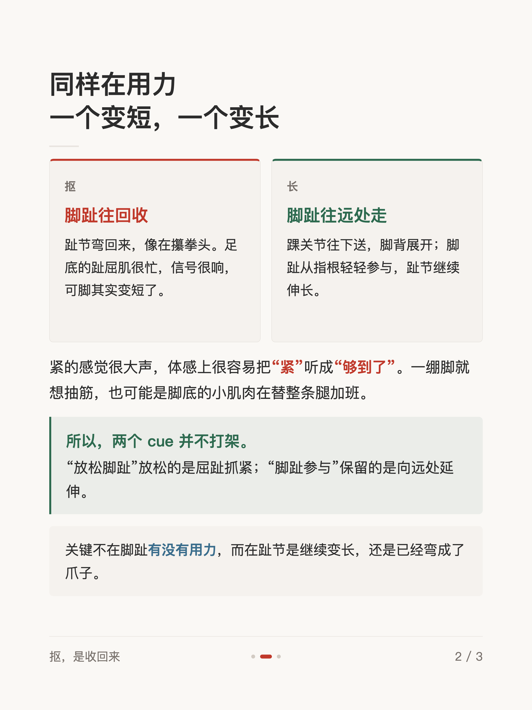
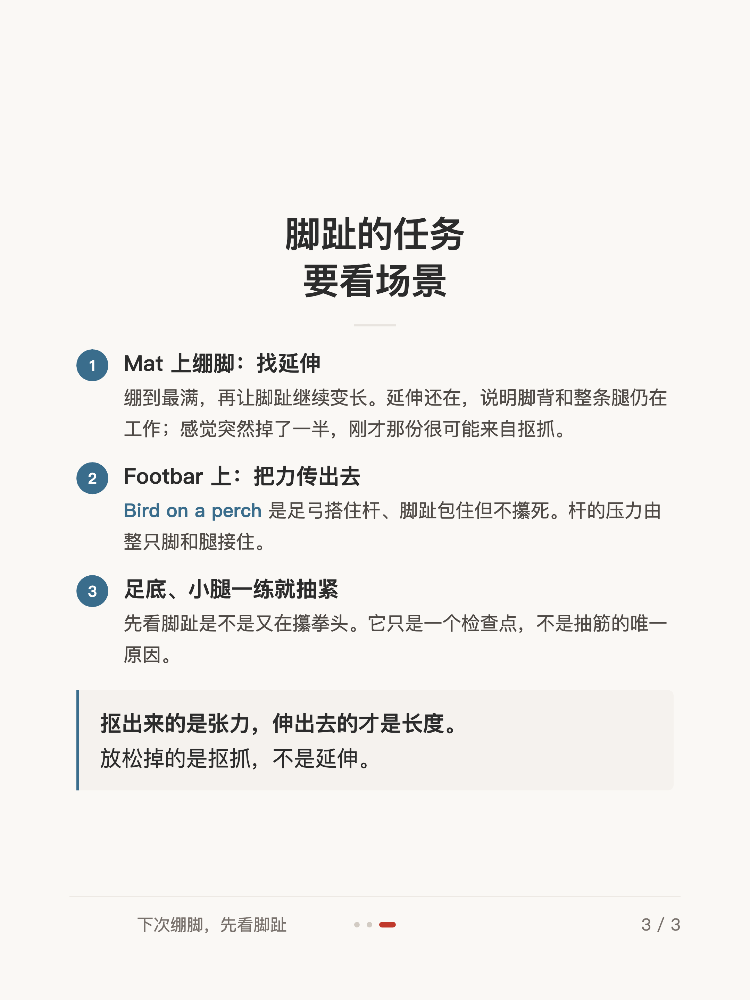

体感短文 #005
绷脚，脚趾头要用力吗

1 / 3

2 / 3

3 / 3
← 左右滑动浏览全部卡片 →
绷一次脚，绷到最满——你的脚趾在变长，还是变成了小爪子？同样在用力，抠是趾节弯回来、脚变短；长是踝往下送、脚背展开、趾节继续伸远。紧的感觉很大声，容易被听成“够到了”。
这组卡片拆解了绷脚时脚趾的角色：关键不在脚趾有没有用力，而在趾节是继续变长，还是已经弯成了爪子。
1 / 3

2 / 3

3 / 3
← 左右滑动浏览全部卡片 →
绷一次脚，绷到最满——你的脚趾在变长，还是变成了小爪子？同样在用力，抠是趾节弯回来、脚变短；长是踝往下送、脚背展开、趾节继续伸远。紧的感觉很大声，容易被听成“够到了”。
这组卡片拆解了绷脚时脚趾的角色：关键不在脚趾有没有用力，而在趾节是继续变长，还是已经弯成了爪子。